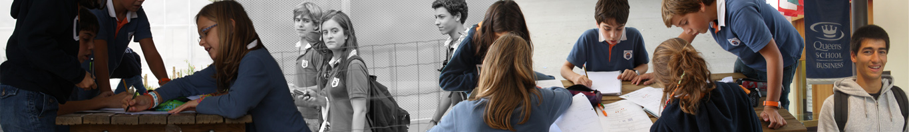

- 


O 2º Encontro Viva a Matemática | O puro prazer da Matemática foi um sucesso! Contámos com oradores conceituados e inspiradores. As apresentações foram muito boas, podemos mesmo afirmar, excelentes. Um olhar matemático rigoroso e clarividente permitiu aumentar a compreensão e o fascínio pela realidade. Como resultado, o encontro teve nível e sofisticação e provocou uma correspondência e empatia, testemunhada por muitos dos participantes. Foi uma Festa da Matemática, como se pretendia!
- "Uma mensagem rápida para vos dar os parabéns pelo fantástico 2º Encontro "Viva A Matemática". Foi excelente. Muitos parabéns! O nível foi altíssimo, e as pessoas estavam muito contentes. Eu gostei imenso de ter participado - uma grande honra. O CST está a fazer uma pequena revolução no ensino da matemática e, mais importante ainda, no puro prazer da matemática." Henrique Leitão - "O nível das comunicações do ano passado foi muito bom. Mas o deste ano ainda foi muito melhor! E estava tudo muito muito bem organizado. Teve nível e sofisticação." Carlos Santos -"Na realidade eu sou a mais interessada que a matemática, os professores e o colégio tenham todo o sucesso! Não é por acaso que os meus filhos são alunos fundadores! Eu tenho a sorte de poder dedicar-me 100% à minha família e encaro este 'viva a matemática!' como sendo uma mais valia para todos inclusive para a minha família!" Filipa Fortunato - "Quero expressar o prazer que tive no encontro de matemática. Foi com prazer e muita surpresa que ouvi os diversos oradores. Talvez por o assunto tocar mais de perto, achei que a palestra do Great Math que me agradou sobremaneira. Mas que dizer da música? E do painel? E restantes? Foi sempre prazeirosa e com ritmo. O encadeamento dos oradores estava excelente. E o espaço: demais. Aquele jardim é uma cobiça á preguiça. Uma sugestão para próxima edição (claro que vai vai haver!): a seguir ao painel de oradores deviam dar oportunidade a um período de perguntas e respostas orientadas pelo/a moderador/a. Muitos parabéns a todos vós." Raul Dantas, Director do Colégio das Descobertas do Montijo - "Não posso deixar de agradecer a simpatia e profissionalismo com que me acolheram no Viva a Matemática. Enalteço também o projeto muito interessante que têm no Colégio de S. Tomás, em particular no que diz respeito ao ensino da Matemática desde tenra idade." Ricardo Teixeira - "Foi fascinante e repleto de ensinamentos e estímulo intelectual." João Paulo Malta - "Posso dizer que foi um prazer participar no encontro Viva a Matemática! Se achar bem, pode acrescentar no site os seguintes links do youtube, onde se encontram alguns videos que apresentei na sessão. Deste modo, quem quiser pode vê-los integralmente e também conhecer os respectivos créditos: Canon 1 a 2, Musical Offering (1747), J. S. Bach; Variação 18, Variações Goldberg (Bach); O dueto espelho; Dies Irae no cinema" Carlota Simões - "Em primeiro lugar, gostava uma vez mais de a felicitar pelo sucesso da iniciativa deste 2º Encontro Viva a Matemática! Assisti a todo o encontro e às diversas intervenções com todo o interesse e partilho inteiramente a sua opinião sobre as diversas apresentações. Naturalmente, agradeço muito o convite que me fez, tanto mais que foi a primeira vez que alguém me convidou para partilhar as memórias inesquecíveis que guardo do meu Tio." Manuel Sebastião - "Apresentei-me a si no passado 25 de Outubro na Univ. Lusíada, onde teve lugar o 2º encontro "Viva a Matemática". Antes de tudo o mais, dou-lhe os parabéns pela parte que lhe toca na organização do encontro. Não pude estar presente de manhã mas felizmente cheguei a tempo de assistir a boa parte da comunicação da sobrinha do Prof. Sebastião e Silva, a qual me emocionou pelos relatos que fez da sua experiência riquíssima de professora muito dedicada. Fiquei até ao fim com muito gosto, incluindo a evocação do Prof. Sebastião e Silva feita pela Prof.ª Suzana Nápoles (se o nome não me falha). Gostaria naturalmente de ser incluído na mailinglist para não perder os próximos encontros." João Pedro Costa - "Sou professora de Matemática e estive presente no encontro Viva a Matemática, realizado no passado dia 25 de Novembro. Congratulo a organização do mesmo pelo decurso dos trabalhos e pela qualidade dos oradores convidados. Pela riqueza que constituiriam as suas intervenções, venho por este meio perguntar-vos se terão disponíveis para os participantes no Encontro, os textos dos oradores, nomeadamente do Prof. Henrique Leitão, que muito me agradou e vários ensinamentos me trouxe e que gostaria de reavivar." Cláudia Oliveira |